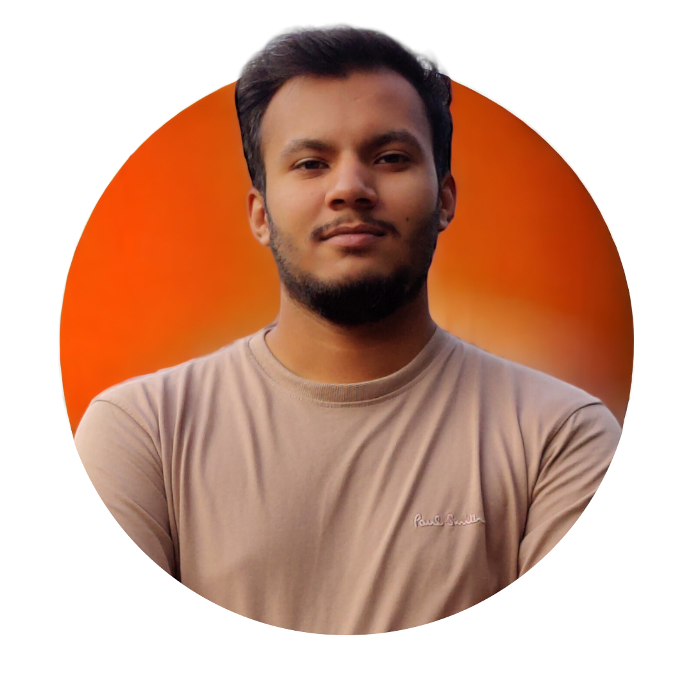

Understand.
Work with customers and support teams to uncover the problem, map the workflow, and agree on what success looks like.
Discovery · Workshops · RequirementsSOLUTIONS ARCHITECT · AI ENGINEER
I’m Faiz. I turn customer challenges into
intelligent systems that work in the real world.
Telecom expertise. AI ingenuity. End-to-end ownership.

I work where engineering meets the customer: discovering the real problem, designing the architecture, proving the idea, and owning what happens after launch.
02 — SELECTED WORK
Real systems. Real constraints.
Explore the thinking behind the delivery.
03 — HOW I WORK
A technical partner through every stage.
Especially when the problem is complicated.
Work with customers and support teams to uncover the problem, map the workflow, and agree on what success looks like.
Discovery · Workshops · RequirementsTranslate requirements into an architecture, a technical demo, or a working POC that stakeholders can evaluate.
Architecture · Pre-sales · POCsConnect systems, automate decisions, and design for tenant isolation, controlled concurrency, and recoverable failures.
Engineering · Integration · ReliabilityCarry the solution through QA, customer acceptance, production release, and the conversations that follow.
UAT · Delivery · Customer success04 — A LITTLE CONTEXT
My work spans agentic AI, backend engineering, hybrid cloud, and technical pre-sales. At DvSum, I own Liberty Latin America delivery from requirements and architecture through production and customer success.
I’m at my best when I can connect a customer’s challenge to a system that makes their day simpler. Outside work, I’m drawn to travel and new places.
Remote · California, USA
Building across a serverless AWS platform of about 70 stacks, 130+ Lambda functions, and 40 product domains, a Java on-premises gateway, and an AI chat service. Leading engineering delivery for LLA and supporting enterprise telecom customers.
Built DvSum’s AI Agent platform from scratch and refactored it into a configuration-driven system. Established tenant-isolation and release safeguards, implemented private connectivity, and contributed Microsoft Fabric / OneLake scanning and LLM-based Power BI lineage extraction.
Remote · Flutter & Android
Built and shipped Flutter and Firebase apps, including DevPay Analytics, a Stripe-based dashboard for merchants.
COMSATS University Islamabad
05 — THE TOOLKIT
The tools change. The goal stays the same:
make the right solution work.
06 — NEXT CONVERSATION
Exploring technical pre-sales, solutions architecture, and AI / platform opportunities.
Particularly where telecom, automation, and customer impact meet.